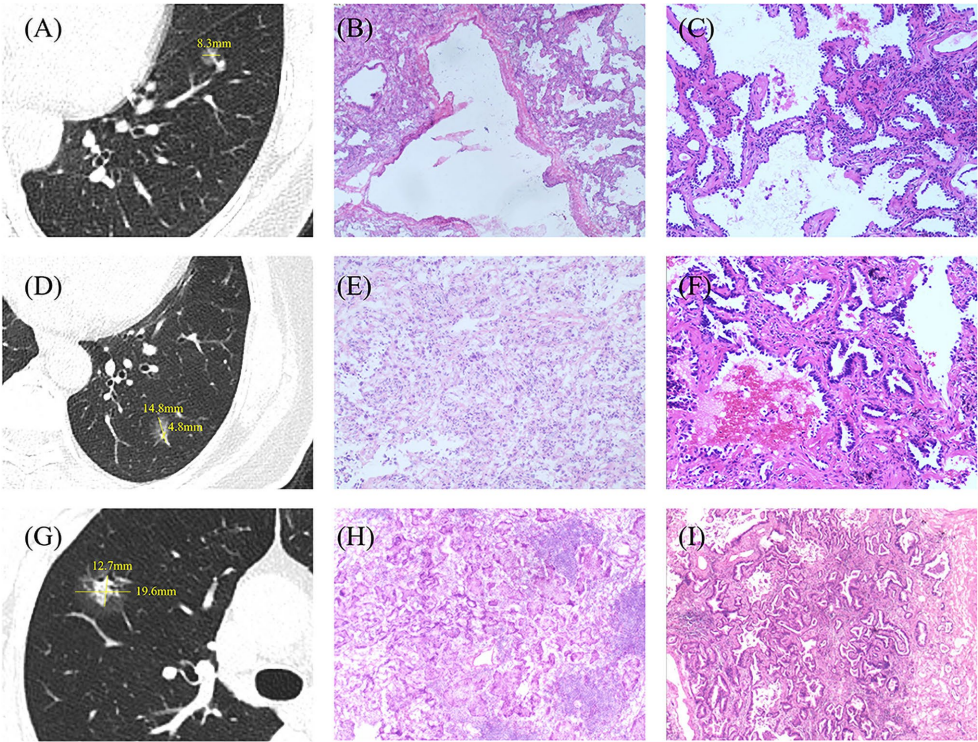

原文片段与原图：本次工程交付
本轮工程交付已获正式审查“继续”（本次新需求 2/3；旧 S4 的 3/3 封存不变）。人工抽样验收仍待进行，未宣布医学质量或阶段验收通过。正式审查记录
判断：继续。风险：1. 原文定位校验不能替代相关性与语境的人工抽查；2. 多对象、矢量及复杂组图仍需核对，不能强行配对；3. 新协议尚未做付费模型实测，旧候选回放不能证明新策略最优。允许本轮工程交付，人工抽样验收仍待进行。
交付描述来自论文原文，逐段保留出处。明确关联才配整幅 Figure 与原图注；没有可用配图仍交付文字。本次付费调用 0，医学抽样审核尚未进行，阶段未判通过。
现行计划已取消完整参考答案的前置要求；开发验收采用自动来源检查与人工抽样核验，已审核导出仍逐条确认。抽样数量和数值门槛待后续实测共同决定。
真实图片能力
复用现有5篇真实 Docling IR，CPU从原PDF提取12个PNG；12个编号Figure候选中5个满足保守机械规则。机械通过表示当前文件/区域结构条件成立，不表示医学正确或对应描述已抽到。
| 论文 | 编号Figure候选 | 无编号区域 | PNG资产 | 机械通过 | 编号待核 |
|---|
| MED03 | 0 | 0 | 0 | 0 | 0 |
| L07 | 6 | 3 | 7 | 3 | 3 |
| L05 | 4 | 1 | 3 | 1 | 3 |
| L01 | 1 | 1 | 1 | 0 | 1 |
| L02 | 1 | 0 | 1 | 1 | 0 |
多对象、矢量或嵌套Form、图号/Panel歧义不自动配对；原生父图注关系和同页关系不能单独作为依据。已实际查看原页及裁图，最终自动通过图片与已查看图片的字节一致。原页核对记录 · 支持矩阵与限制
旧真实输出的离线核查
5个旧独立输出共119条原文候选：1条可形成主图文对、7条配图待核、111条没有显式图号/图注关联。全部119条兼容新的原文约束。这个回放不等同新契约下的模型比较；不计算无完整分母的医学召回率、精确率或F1。8逻辑条件中3条仍只复用旧产物。
| 旧条件 | 候选数 | 主图文对 | 配图待核 | 无显式关系 |
|---|
| L01-B0 | 21 | 0 | 2 | 19 |
| L01-F | 34 | 0 | 3 | 31 |
| L01-R | 复用 L01-F 的旧同次输出，未独立重跑 |
| L01-FR | 复用 L01-F 的旧同次输出，未独立重跑 |
| L05-B0 | 21 | 1 | 1 | 19 |
| L05-F | 20 | 0 | 1 | 19 |
| L05-R | 23 | 0 | 0 | 23 |
| L05-FR | 复用 L05-F 的旧同次输出，未独立重跑 |
完整逐项记录 · L05-B0候选导出清单 · 逐原文片段CSV
实际图文候选
以下四段均为论文原图注，未改写、翻译或合成为新描述；配图保留 A–I 全部面板。其是否应作为目标视觉特征证据，仍待人工核验。
L05-B0 · ev-8fb17978e1fafbb1ca52f15ae55bb6361a6d7e1a · 候选，未经人工/医学批准
Fig. 4 CT and pathological sections for the three groups. A-C are the chest CT, × 100 frozen section, and × 100 paraffin section for a patient
with both FS and FP diagnosed as AIS. D-F represent the chest CT, × 100 frozen section, and × 100 paraffin section for a patient diagnosed
with MIA in FS and IAC in FP. G-I depict the chest CT, × 100 frozen section, and × 100 paraffin section for a patient with FS and FP diagnosed
as IAC

运行入口
普通新PDF默认只做本地CPU准备：
.tools/node/bin/node --import tsx scripts/extract-paper.ts --pdf evaluation/corpus/development-candidates/L05.pdf --document-id new-paper --directory runtime-data/NEW_DIRECTORY
该命令使用正式Docling CPU与docling-parse原文锚点，保存 parser-result.json、Figure catalog 和明确标记“尚未模型抽取”的准备结果。通用入口已以新文献ID从PDF重新解析实际跑通，31.96秒、0 API、parser_status=partial；不将准备完成称为医学抽取完成。
增加 --run-config 新授权配置.json 才进入既有 runExtractionDocument，配置需明确模型、medium档、B0/F/R/FR、范围与新调用预算/授权来源；本次未提供或伪造付费批准配置。真实IR默认自动准备图片，分批选择原文，生成 extraction/delivery.json 与 candidate-export/。旧实验剩余额度不自动继承。
已有抽取结果可用 scripts/export-verbatim-evidence.ts --document IR --result RESULT --figure-catalog CATALOG --mode candidates --directory NEW_DIRECTORY 导出。已审核导出使用 --mode approved --reviews 实际逐条审核.json；仅文字审核可继续交付文字，新增图像保持待核。图目录丢失时带图导出拒绝，可显式省略图目录并交付标明not_checked的有效文字。
新目录已存在即拒绝覆盖；PDF缺失或SHA/IR/input来源不一致停止并阻止未核验已审核导出；普通图像渲染失败允许保留有效原文。医生自由补充和审核理由不进入论文原文片段。完整S5界面本轮未扩建。
现行计划0.4、执行说明0.2已完成最后一次CAS同步；258项文档及跨文件一致性检查通过。计划一致性记录 · 计划与工程最终同步
检查与边界
稳定版162项抽取回归、1项真实CPU跨语言桥接、3项Python测试（包含8个旋转/CropBox/UserUnit组合）及类型检查通过；最后新增来源失效与通用CLI边界有独立日志。初始旧译文夹具失败与修正记录保留。最终检查 · 几何测试 · 普通CLI实际运行 · 缺PDF与拒覆写
未执行新模型付费抽取、人工医学抽样核验或正式新策略优劣比较。原PDF、旧IR、旧实验、AI参考草稿及人审事件保持原状。